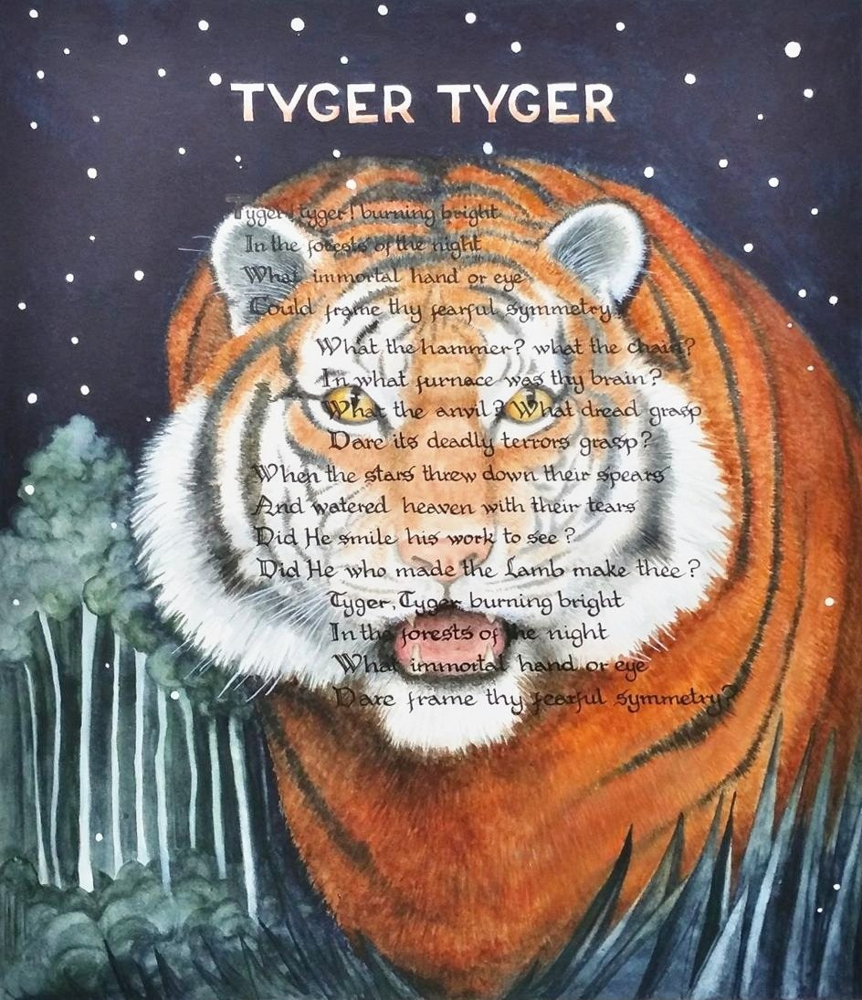

I expectMediumInk and watercolour on paperSize26 × 23 cmPricePrice on request [Joan to price]Catalogue no.P2See it larger · Ask about this painting
Sonnet 18MediumInk and watercolour on paperSize26 × 22.5 cmYear2019PricePrice on request [Joan to price]Catalogue no.P6See it larger · Ask about this painting
The Lake Isle of InnisfreeMediumInk and watercolour on paperSize25.5 × 22.5 cmPricePrice on request [Joan to price]Catalogue no.P8See it larger · Ask about this painting
Tyger, TygerMediumInk and watercolour on paperSize26 × 22.5 cmPricePrice on request [Joan to price]Catalogue no.P9See it larger · Ask about this painting